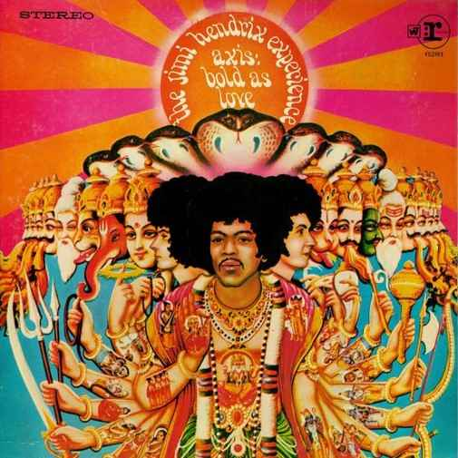

JIMI HENDRIX
ARE YOU EXPERIENCED?
Released May 1967
-
Musicians:
- Jimi Hendrix, Guitar & Vocals
- Mitch Mitchell, Drums & Backing vocals
- Noel Redding, Bass guitar & Backing vocals
Are Your Experienced is the debut studio album by the Jimi Hendrix Experience. Realeased in 1967, the LP was an immediate critical and commercial succes, and it is widely regarded as one of the greatest albums of all time. The album features Jimi Hendrix's innovative approach to songwriting and electric guitar playing which soon established a new direction in psychelic and hard rock music.

- Side One
- Foxy Lady
- Manic Depression
- Hey Joe
- Love or Confusion
- May This Be Love
- I Don't Live Today
- Side Two
- The Wind Cries Mary
- Fire
- 3rd Stone from the Sun
- Foxey Lady
- Are You Experienced?
AXI:S BOLD AS LOVE
Released Dec 1967
-
Musicians:
- Jimi Hendrix, Guitar & Vocals
- Mitch Mitchell, Drums & Backing vocals
- Noel Redding, Bass guitar & Backing vocals
Are Your Experienced is the debut studio album by the Jimi Hendrix Experience. Realeased in 1967, the LP was an immediate critical and commercial succes, and it is widely regarded as one of the greatest albums of all time. The album features Jimi Hendrix's innovative approach to songwriting and electric guitar playing which soon established a new direction in psychelic and hard rock music.
